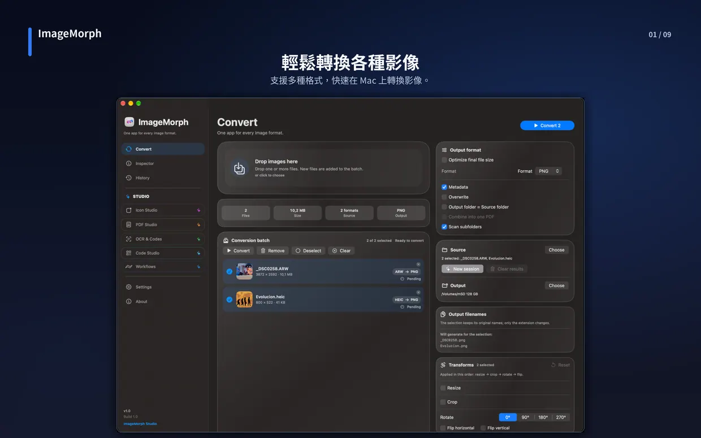
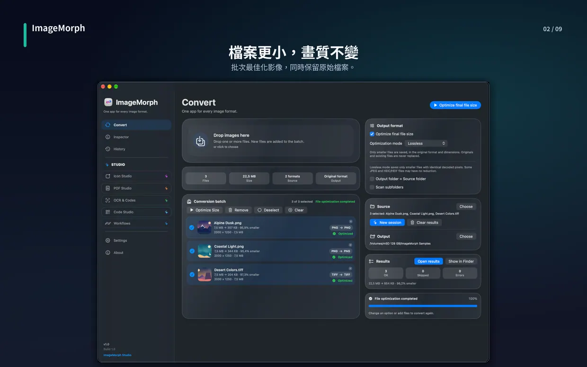
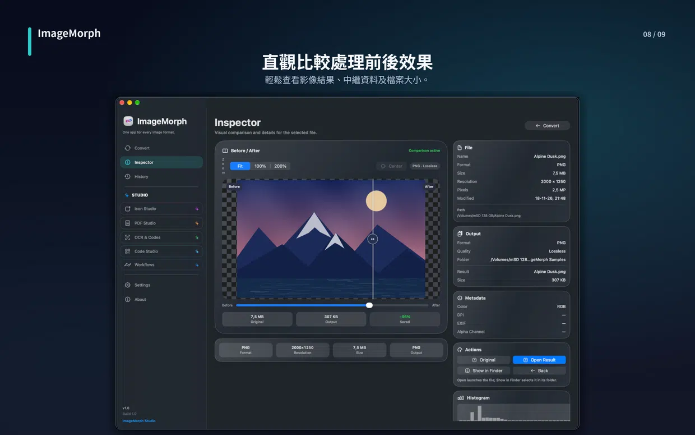
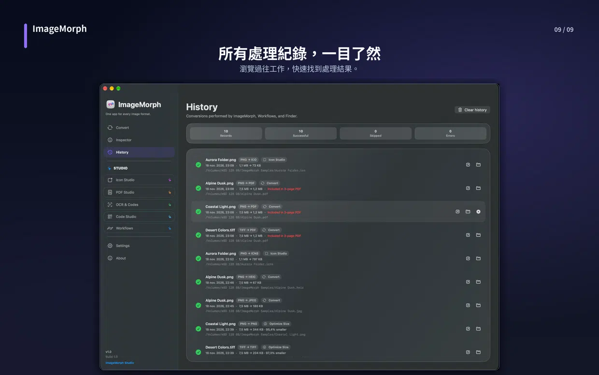
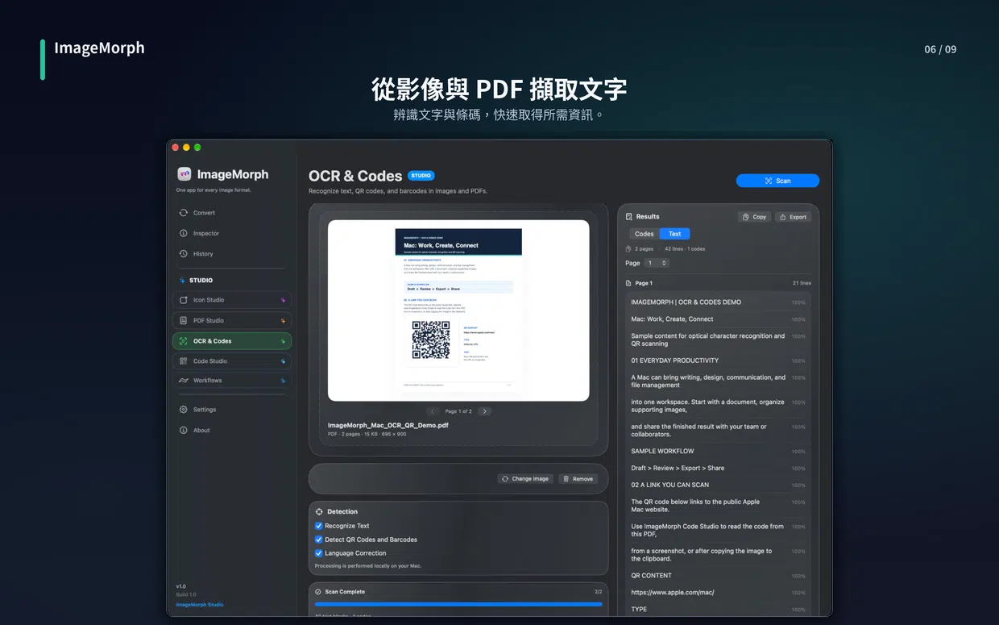
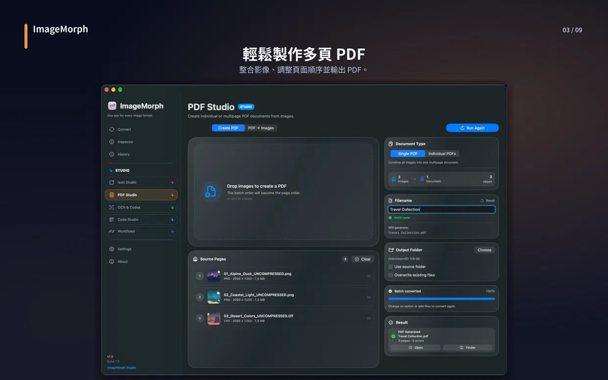
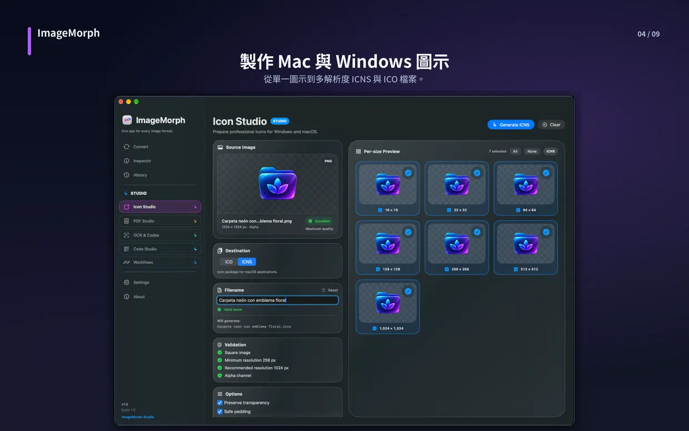
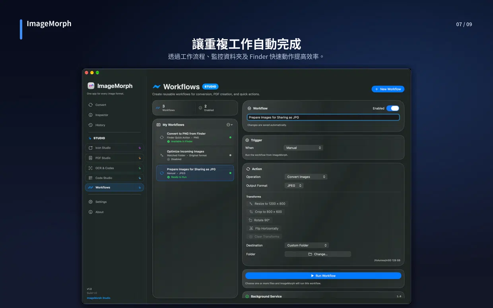

JPEG · PNG · HEIC · TIFF
逐一或批次處理JPEG、PNG、HEIC與TIFF。

在 Mac 上轉換、調整尺寸並最佳化圖片。建立 PDF，自動處理重複工作。
準備在 Mac App Store 推出。

在 Mac 上轉換、調整尺寸並最佳化圖片。建立 PDF，自動處理重複工作。

辨識圖片與多頁 PDF 中的文字，檢查並匯出結果。
在 Mac 讀取電子郵件或 PDF 中的 QR 碼，先確認目的位址，再決定是否開啟。

逐一或批次處理JPEG、PNG、HEIC與TIFF。

依需求調整影像尺寸與比例，必要時可保留原始長寬比。

依格式進行無損或支援的有損最佳化；僅在結果較小時產生檔案。

檢視格式、尺寸及中繼資料。轉換後可比較原始檔案與輸出結果。

檢視最近操作；若輸出檔案仍在，可開啟或在 Finder 顯示。

Studio 整合 OCR、條碼辨識、PDF 工具、圖示製作與自動化。一次購買，無須訂閱。
Studio 是選購的永久性 App 內購買項目。

辨識圖片與多頁 PDF 中的文字，檢查並匯出結果。


從剪貼簿、影像、PDF 或資料夾讀取代碼，也可使用相容的相機與掃描器擷取。開啟前先查看內容與連結。


建立多頁 PDF，將頁面匯出為圖片並調整旋轉方向。

製作 ICO 與 ICNS 檔案，匯出前檢查各種尺寸。


產生 QR、Code128、Data Matrix、EAN、PDF417、Aztec，匯出 PNG 或 PDF。

儲存工作流程、監看資料夾並啟動 Finder 動作。

| 功能 | Free | Studio |
|---|---|---|
| 轉換、調整尺寸、最佳化 | 包含 | 包含 |
| 佇列、Inspector、比較、直方圖 | 包含 | 包含 |
| 基本PDF建立 | 包含 | 包含 |
| PDF Studio與頁面影像輸出 | — | 包含 |
| OCR與代碼辨識 | — | 包含 |
| 代碼產生與相機/掃描器輸入 | — | 包含 |
| ICO與ICNS圖示組 | — | 包含 |
| 工作流程、監控資料夾與Finder快速動作 | — | 包含 |
本地價格、Studio取用權與試用資格均顯示在App中。購買與恢復使用Apple服務。
圖片轉換、最佳化、PDF 製作和 OCR 均在 Mac 本機完成。檔案內容不會傳送至 Studio 試用授權服務。存取檔案、資料夾、相機和掃描器需要授權；設定、歷史紀錄、書籤及含名稱、路徑或錯誤的日誌可能儲存在本機。
閱讀隱私權政策